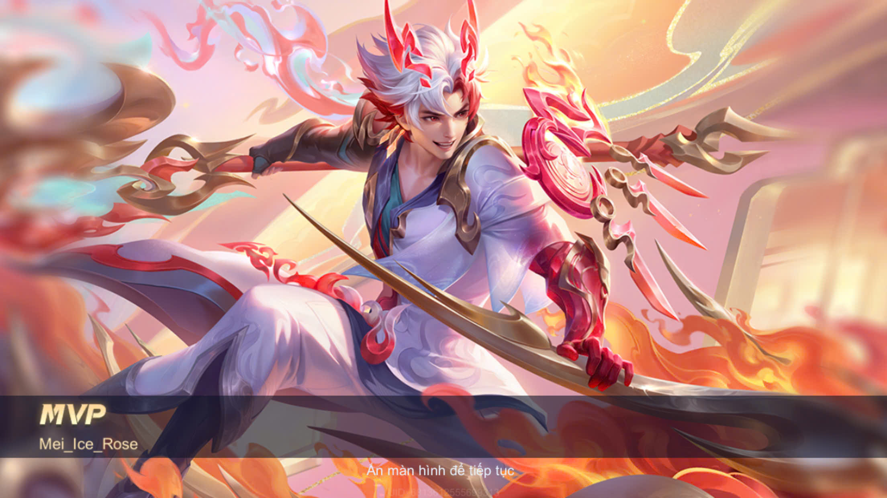

Bạn muốn xem bói tarrot hay xem bói bằng chỉ tay?
Chúng tôi sẽ mang tới cho bạn 1 trải nghiệm bói toán tuyệt vời. Với 5 năm
kinh nghiệm bói toán, chúng tôi có thể bói chuẩn hay không thì tôi không
biết.
Dùng cho đoạn text ngắn
Chia khối
Bói 1
Bói 2
Bói 3
Bói chuyên sâu
Bói pro
Bói pro vip
Bản đồ sao
Kinh dịch
Chỉ tay
Trang bói toán Tâm Tâm
Đây là thẻ font có chữ có màu đỏ.
thẻ font có phông chữ là verdana
Thẻ font có size chữ là 10
Hello cả nhà iu của kem
10010
H2O11

Đây là đường dẫn đến HUMG